|
Символ |
Название
символа |
Значение/
определение
|
Пример |
|
= |
знак равенства |
равенство |
5 = 2 + 3
5 равно 2 + 3 |
|
≠ |
знак не равно |
неравенство |
5 ≠ 4
5 не равно 4 |
|
≈ |
примерно равный |
приближение |
sin (0,01) ≈ 0,01,
x ≈ y означает, что x примерно равен y |
|
/ |
строгое неравенство |
больше чем |
5/ 4
5 больше 4 |
|
< |
строгое неравенство |
меньше, чем |
4 <5
4 меньше 5 |
|
≥ |
неравенство |
больше или равно |
5 ≥ 4,
x ≥ y означает, что x больше или равно y |
|
≤ |
неравенство |
меньше или равно |
4 ≤ 5,
x ≤ y означает, что x меньше или равно y |
|
() |
круглые скобки |
сначала вычислить выражение внутри |
2 × (3 + 5) = 16 |
|
[] |
кронштейны |
сначала вычислить выражение внутри |
[(1 + 2) × (1 + 5)] = 18 |
|
+ |
знак плюс |
дополнение |
1 + 1 = 2 |
|
- |
знак минус |
вычитание |
2 - 1 = 1 |
|
± |
плюс - минус |
операции плюс и минус |
3 ± 5 = 8 или -2 |
|
± |
минус - плюс |
как минус, так и плюс операции |
3 ∓ 5 = -2 или 8 |
|
* |
звездочка |
умножение |
2 * 3 = 6 |
|
× |
знак раз |
умножение |
2 × 3 = 6 |
|
⋅ |
точка умножения |
умножение |
2 ⋅ 3 = 6 |
|
÷ |
знак деления / обел |
деление |
6 ÷ 2 = 3 |
|
/ |
разделительная косая черта |
деление |
6/2 = 3 |
|
- |
горизонтальная линия |
деление / дробь |
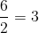 |
|
мод |
по модулю |
расчет остатка |
7 мод 2 = 1 |
|
. |
период |
десятичная точка, десятичный разделитель |
2,56 = 2 + 56/100 |
|
а б |
сила |
показатель степени |
2 3 = 8 |
|
а ^ б |
каретка |
показатель степени |
2 ^ 3 = 8 |
|
√ а |
квадратный корень |
√ а ⋅ √ а = а |
√ 9 = ± 3 |
|
3 √ а |
кубический корень |
3 √ a ⋅ 3 √ a ⋅ 3 √ a = a |
3 √ 8 = 2 |
|
4 √ а |
четвертый корень |
4 √ a ⋅ 4 √ a ⋅ 4 √ a ⋅ 4 √ a = a |
4 √ 16 = ± 2 |
|
п √ а |
корень n-й степени (радикал) |
|
для n = 3, n √ 8 = 2 |
|
% |
процентов |
1% = 1/100 |
10% × 30 = 3 |
|
‰ |
промилле |
1 ‰ = 1/1000 = 0,1% |
10 ‰ × 30 = 0,3 |
|
ppm |
на миллион |
1 частей на миллион = 1/1000000 |
10 частей на миллион × 30 = 0,0003 |
|
ppb |
на миллиард |
1ppb = 1/1000000000 |
10ppb × 30 = 3 × 10-7 |
|
ppt |
на триллион |
1ppt = 10 -12 |
10ppt × 30 = 3 × 10-10 |
|
Символ |
Название
символа |
Значение/
определение
|
Пример |
|
∠ |
угол |
образованный двумя лучами |
∠ABC = 30 ° |
|
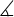 |
измеренный угол |
|
ABC = 30 ° |
|
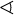 |
сферический угол |
|
AOB = 30 ° |
|
∟ |
прямой угол |
= 90 ° |
α = 90 ° |
|
° |
степень |
1 оборот = 360 ° |
α = 60 ° |
|
град |
степень |
1 оборот = 360 градусов |
α = 60 градусов |
|
′ |
премьер |
угловая минута, 1 ° = 60 ′ |
α = 60 ° 59 ′ |
|
″ |
двойной штрих |
угловая секунда, 1 ′ = 60 ″ |
α = 60 ° 59′59 ″ |
|
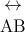 |
линия |
бесконечная линия |
|
|
AB |
отрезок |
линия от точки A до точки B |
|
|
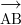 |
луч |
линия, которая начинается из точки A |
|
|
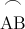 |
дуга |
дуга от точки A до точки B |
= 60 ° |
|
⊥ |
перпендикуляр |
перпендикулярные линии (угол 90 °) |
AC ⊥ BC |
|
∥ |
параллельно |
параллельные линии |
AB ∥ CD |
|
≅ |
соответствует |
эквивалентность геометрических форм и размеров |
∆ABC≅ ∆XYZ |
|
~ |
сходство |
одинаковые формы, разные размеры |
∆ABC ~ ∆XYZ |
|
Δ |
треугольник |
форма треугольника |
ΔABC≅ ΔBCD |
|
| х - у | |
расстояние |
расстояние между точками x и y |
| х - у | = 5 |
|
π |
константа пи |
π = 3,141592654 ...
отношение длины окружности к диаметру круга. |
c = π ⋅ d = 2⋅ π ⋅ r |
|
рад |
радианы |
радианы угловая единица |
360 ° = 2π рад |
|
c |
радианы |
радианы угловая единица |
360 ° = 2π с |
|
град |
градианы / гононы |
уголковый блок |
360 ° = 400 градусов |
|
г |
градианы / гононы |
уголковый блок |
360 ° = 400 г |
|
Символ |
Название
символа |
Значение/
определение
|
Пример |
|
х |
переменная x |
неизвестное значение для поиска |
когда 2 x = 4, то x = 2 |
|
≡ |
эквивалентность |
идентично |
|
|
≜ |
равны по определению |
равны по определению |
|
|
знак равно |
равны по определению |
равны по определению |
|
|
~ |
примерно равный |
слабое приближение |
11 ~ 10 |
|
≈ |
примерно равный |
приближение |
грех (0,01) ≈ 0,01 |
|
∝ |
пропорционально |
пропорционально |
y ∝ x, когда y = kx, k постоянная |
|
∞ |
лемниската |
символ бесконечности |
|
|
≪ |
намного меньше чем |
намного меньше чем |
1 1000000 ≪ |
|
≫ |
намного больше, чем |
намного больше, чем |
1000000 ≫ 1 |
|
() |
круглые скобки |
сначала вычислить выражение внутри |
2 * (3 + 5) = 16 |
|
[] |
кронштейны |
сначала вычислить выражение внутри |
[(1 + 2) * (1 + 5)] = 18 |
|
{} |
подтяжки |
набор |
|
|
⌊ х ⌋ |
напольные кронштейны |
округляет число до меньшего целого |
⌊4.3⌋ = 4 |
|
⌈ х ⌉ |
потолочные кронштейны |
округляет число до верхнего целого |
⌈4.3⌉ = 5 |
|
х ! |
восклицательный знак |
факториал |
4! = 1 * 2 * 3 * 4 = 24 |
|
| х | |
вертикальные полосы |
абсолютная величина |
| -5 | = 5 |
|
f ( x ) |
функция x |
отображает значения x в f (x) |
е ( х ) = 3 х +5 |
|
( ж ∘ г ) |
функциональная композиция |
( е ∘ г ) ( х ) = е ( г ( х )) |
f ( x ) = 3 x , g ( x ) = x -1 ⇒ ( f ∘ g ) ( x ) = 3 ( x -1) |
|
( а , б ) |
открытый интервал |
( a , b ) = { x | а < х < б } |
х ∈ (2,6) |
|
[ а , б ] |
закрытый интервал |
[ a , b ] = { x | а ≤ х ≤ б } |
x ∈ [2,6] |
|
∆ |
дельта |
изменение / разница |
∆ t = t 1 - t 0 |
|
∆ |
дискриминант |
Δ = b 2 - 4 переменного тока |
|
|
∑ |
сигма |
суммирование - сумма всех значений в диапазоне ряда |
Σ х я = х 1 + х 2 + ... + х п |
|
∑∑ |
сигма |
двойное суммирование |
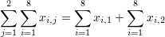 |
|
∏ |
заглавная пи |
product - произведение всех значений в диапазоне серии |
∏ x i = x 1 ∙ x 2 ∙ ... ∙ x n |
|
е |
e константа / число Эйлера |
е = 2,718281828 ... |
е = lim (1 + 1 / x ) x , x → ∞ |
|
γ |
Постоянная Эйлера-Маскерони |
γ = 0,5772156649 ... |
|
|
φ |
Золотое сечение |
константа золотого сечения |
|
|
π |
константа пи |
π = 3,141592654 ...
отношение длины окружности к диаметру круга. |
c = π ⋅ d = 2⋅ π ⋅ r |
|
Символ |
Название
символа |
Значение/
определение
|
Пример |
|
P ( А ) |
функция вероятности |
вероятность события A |
P ( A ) = 0,5 |
|
P ( A ⋂ B ) |
вероятность пересечения событий |
вероятность того, что событий A и B |
P ( A ⋂ B ) = 0,5 |
|
P ( A ⋃ B ) |
вероятность объединения событий |
вероятность того, что событий A или B |
P ( A ⋃ B ) = 0,5 |
|
P ( A | B ) |
функция условной вероятности |
вероятность события A данное событие B произошло |
P ( A | B ) = 0,3 |
|
f ( x ) |
функция плотности вероятности (pdf) |
P ( a ≤ x ≤ b ) = ∫ f ( x ) dx |
|
|
F ( х ) |
кумулятивная функция распределения (cdf) |
F ( х ) = Р ( Х ≤ х ) |
|
|
μ |
Средняя численность населения |
среднее значение совокупности |
μ = 10 |
|
E ( X ) |
ожидаемое значение |
ожидаемое значение случайной величины X |
E ( X ) = 10 |
|
E ( X | Y ) |
условное ожидание |
ожидаемое значение случайной величины X с учетом Y |
E ( X | Y = 2 ) = 5 |
|
var ( X ) |
отклонение |
дисперсия случайной величины X |
var ( X ) = 4 |
|
σ 2 |
отклонение |
дисперсия значений совокупности |
σ 2 = 4 |
|
std ( X ) |
стандартное отклонение |
стандартное отклонение случайной величины X |
std ( X ) = 2 |
|
σ X |
стандартное отклонение |
значение стандартного отклонения случайной величины X |
σ X = 2 |
|

|
медиана |
среднее значение случайной величины x |
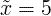 |
|
cov ( X , Y ) |
ковариация |
ковариация случайных величин X и Y |
cov ( X, Y ) = 4 |
|
корр ( X , Y ) |
корреляция |
корреляция случайных величин X и Y |
корр ( X, Y ) = 0,6 |
|
ρ X , Y |
корреляция |
корреляция случайных величин X и Y |
ρ X , Y = 0,6 |
|
∑ |
суммирование |
суммирование - сумма всех значений в диапазоне ряда |
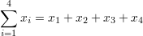 |
|
∑∑ |
двойное суммирование |
двойное суммирование |
|
|
Пн |
Режим |
значение, которое чаще всего встречается в популяции |
|
|
MR |
средний диапазон |
MR = ( x макс + x мин ) / 2 |
|
|
Мкр |
медиана выборки |
половина населения ниже этого значения |
|
|
Q 1 |
нижний / первый квартиль |
25% населения ниже этого значения |
|
|
2 квартал |
медиана / второй квартиль |
50% населения ниже этого значения = медиана выборки |
|
|
3 квартал |
верхний / третий квартиль |
75% населения ниже этого значения |
|
|
х |
выборочное среднее |
среднее / среднее арифметическое |
х = (2 + 5 + 9) / 3 = 5,333 |
|
с 2 |
выборочная дисперсия |
оценщик дисперсии выборки населения |
s 2 = 4 |
|
с |
стандартное отклонение выборки |
Оценка стандартного отклонения выборки населения |
s = 2 |
|
z x |
стандартная оценка |
z x = ( x - x ) / s x |
|
|
X ~ |
распределение X |
распределение случайной величины X |
X ~ N (0,3) |
|
N ( μ , σ 2 ) |
нормальное распределение |
гауссово распределение |
X ~ N (0,3) |
|
U ( а , б ) |
равномерное распределение |
равная вероятность в диапазоне a, b |
Х ~ U (0,3) |
|
ехр (λ) |
экспоненциальное распределение |
f ( x ) = λe - λx , x ≥0 |
|
|
гамма ( c , λ) |
гамма-распределение |
f ( x ) = λ cx c-1 e - λx / Γ ( c ), x ≥0 |
|
|
χ 2 ( к ) |
распределение хи-квадрат |
f ( x ) = x k / 2-1 e - x / 2 / (2 k / 2 Γ ( k / 2)) |
|
|
F ( k 1 , k 2 ) |
F распределение |
|
|
|
Корзина ( n , p ) |
биномиальное распределение |
f ( k ) = n C k p k (1 -p ) nk |
|
|
Пуассон (λ) |
распределение Пуассона |
е ( К ) знак равно λ К е - λ / К ! |
|
|
Геом ( p ) |
геометрическое распределение |
f ( k ) = p (1 -p ) k |
|
|
HG ( N , K , n ) |
гипергеометрическое распределение |
|
|
|
Берн ( p ) |
Распределение Бернулли |
|
|
|
Символ |
Название
символа |
Значение/
определение
|
Пример |
|
{} |
набор |
набор элементов |
A = {3,7,9,14},
B = {9,14,28} |
|
А ∩ Б |
пересечение |
объекты, принадлежащие множеству A и множеству B |
A ∩ B = {9,14} |
|
А ∪ Б |
союз |
объекты, принадлежащие множеству A или множеству B |
A ∪ B = {3,7,9,14,28} |
|
А ⊆ Б |
подмножество |
A является подмножеством B. множество A включено в набор B. |
{9,14,28} ⊆ {9,14,28} |
|
A ⊂ B |
правильное подмножество / строгое подмножество |
A является подмножеством B, но A не равно B. |
{9,14} ⊂ {9,14,28} |
|
А ⊄ Б |
не подмножество |
множество A не является подмножеством множества B |
{9,66} ⊄ {9,14,28} |
|
А ⊇ Б |
суперсет |
A является надмножеством B. множество A включает множество B |
{9,14,28} ⊇ {9,14,28} |
|
А ⊃ Б |
правильный суперсет / строгий суперсет |
A является надмножеством B, но B не равно A. |
{9,14,28} ⊃ {9,14} |
|
А ⊅ Б |
не суперсет |
множество A не является надмножеством множества B |
{9,14,28} ⊅ {9,66} |
|
2 А |
набор мощности |
все подмножества A |
|
|
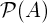 |
набор мощности |
все подмножества A |
|
|
А = В |
равенство |
оба набора имеют одинаковые элементы |
A = {3,9,14},
B = {3,9,14},
A = B |
|
А в |
дополнять |
все объекты, не принадлежащие множеству A |
|
|
А \ Б |
относительное дополнение |
объекты, принадлежащие A, а не B |
A = {3,9,14},
B = {1,2,3},
AB = {9,14} |
|
А - Б |
относительное дополнение |
объекты, принадлежащие A, а не B |
A = {3,9,14},
B = {1,2,3},
AB = {9,14} |
|
A ∆ B |
симметричная разница |
объекты, принадлежащие A или B, но не их пересечение |
A = {3,9,14},
B = {1,2,3},
A ∆ B = {1,2,9,14} |
|
А ⊖ Б |
симметричная разница |
объекты, принадлежащие A или B, но не их пересечение |
A = {3,9,14},
B = {1,2,3},
A ⊖ B = {1,2,9,14} |
|
a ∈A |
элемент,
принадлежит |
установить членство |
A = {3,9,14}, 3 ∈ A |
|
x ∉A |
не элемент |
нет установленного членства |
A = {3,9,14}, 1 ∉ A |
|
( а , б ) |
упорядоченная пара |
сборник из 2-х элементов |
|
|
A × B |
декартово произведение |
множество всех упорядоченных пар из A и B |
|
|
| A | |
мощность |
количество элементов множества A |
A = {3,9,14}, | A | = 3 |
|
#A |
мощность |
количество элементов множества A |
A = {3,9,14}, # A = 3 |
|
| |
вертикальная полоса |
такой, что |
А = {х | 3 <х <14} |
|
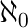 |
алеф-нуль |
бесконечная мощность множества натуральных чисел |
|
|

|
алеф-он |
мощность множества счетных порядковых чисел |
|
|
Ø |
пустой набор |
Ø = {} |
C = {Ø} |
|
|
универсальный набор |
набор всех возможных значений |
|
|
 0 0
|
набор натуральных / целых чисел (с нулем) |
0 = {0,1,2,3,4, ...} |
0 ∈ 0 |
|
1 |
набор натуральных / целых чисел (без нуля) |
1 = {1,2,3,4,5, ...} |
6 ∈ 1 |
|
|
набор целых чисел |
= {...- 3, -2, -1,0,1,2,3, ...} |
-6 ∈ |
|
|
набор рациональных чисел |
= { x | x = a / b , a , b ∈ } |
2/6 ∈ |
|
|
набор реальных чисел |
= { x | -∞ < х <∞} |
6.343434∈ |
|
|
набор комплексных чисел |
= { z | z = a + bi , -∞ < a <∞, -∞ < b <∞} |
6 + 2 i ∈ |
|
Символ |
Название
символа |
Значение/
определение
|
Пример |
|
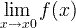 |
предел |
предельное значение функции |
|
|
ε |
эпсилон |
представляет собой очень маленькое число, близкое к нулю |
ε → 0 |
|
е |
e константа / число Эйлера |
е = 2,718281828 ... |
е = lim (1 + 1 / x ) x , x → ∞ |
|
y ' |
производная |
производная - обозначение Лагранжа |
(3 х 3 ) '= 9 х 2 |
|
у '' |
вторая производная |
производная от производной |
(3 х 3 ) '' = 18 х |
|
у ( п ) |
n-я производная |
n раз вывод |
(3 х 3 ) (3) = 18 |
|
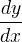 |
производная |
производная - обозначение Лейбница |
d (3 x 3 ) / dx = 9 x 2 |
|
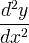 |
вторая производная |
производная от производной |
d 2 (3 x 3 ) / dx 2 = 18 x |
|
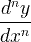 |
n-я производная |
n раз вывод |
|
|
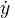 |
производная по времени |
производная по времени - обозначение Ньютона |
|
|
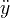 |
вторая производная по времени |
производная от производной |
|
|
D x y |
производная |
производная - обозначение Эйлера |
|
|
Д х 2 у |
вторая производная |
производная от производной |
|
|
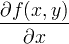 |
частная производная |
|
∂ ( x 2 + y 2 ) / ∂ x = 2 x |
|
∫ |
интеграл |
противоположно происхождению |
∫ f (x) dx |
|
∫∫ |
двойной интеграл |
интегрирование функции двух переменных |
∫∫ f (x, y) dxdy |
|
∫∫∫ |
тройной интеграл |
интегрирование функции 3 переменных |
∫∫∫ f (x, y, z) dxdydz |
|
∮ |
замкнутый контур / линейный интеграл |
|
|
|
∯ |
интеграл с закрытой поверхностью |
|
|
|
∰ |
интеграл замкнутого объема |
|
|
|
[ а , б ] |
закрытый интервал |
[ a , b ] = { x | а ≤ х ≤ б } |
|
|
( а , б ) |
открытый интервал |
( a , b ) = { x | а < х < б } |
|
|
я |
мнимая единица |
я ≡ √ -1 |
г = 3 + 2 я |
|
z * |
комплексно сопряженный |
z = a + bi → z * = a - bi |
г * = 3 - 2 я |
|
z |
комплексно сопряженный |
z = a + bi → z = a - bi |
г = 3 - 2 я |
|
Re ( z ) |
действительная часть комплексного числа |
z = a + bi → Re ( z ) = a |
Re (3 - 2 i ) = 3 |
|
Im ( z ) |
мнимая часть комплексного числа |
z = a + bi → Im ( z ) = b |
Im (3 - 2 я ) = -2 |
|
| z | |
абсолютное значение / величина комплексного числа |
| z | = | а + би | = √ ( a 2 + b 2 ) |
| 3 - 2 я | = √13 |
|
arg ( z ) |
аргумент комплексного числа |
Угол радиуса в комплексной плоскости |
arg (3 + 2 i ) = 33,7 ° |
|
∇ |
набла / дель |
оператор градиента / дивергенции |
∇ е ( х , у , г ) |
|
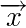 |
вектор |
|
|
|
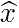 |
единичный вектор |
|
|
|
х * у |
свертка |
у ( т ) = х ( т ) * ч ( т ) |
|
|
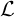 |
Преобразование Лапласа |
F ( s ) = { f ( t )} |
|
|
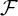 |
преобразование Фурье |
X ( ω ) = { f ( t )} |
|
|
δ |
дельта-функция |
|
|
|
∞ |
лемниската |
символ бесконечности |
|